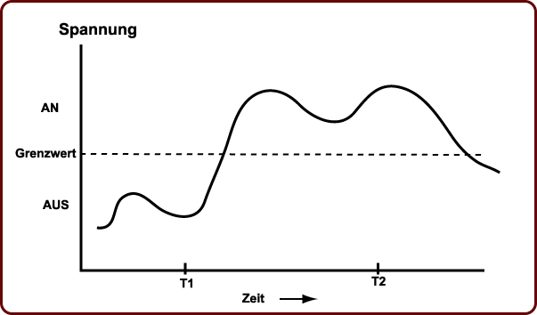

Antwort:
Die Berechnung wird durchgeführt, indem kleine Kugeln
in eindeutige Positionen bewegt werden.
Eine Kugel ist entweder an einer Stelle, an der sie als Teil einer Zahl zählt,
oder sie ist an einer Stelle, an der sie nicht zählt.
Damit ist der Abakus ein diskretes Gerät, da es sich immer um eine "Alles oder Nichts" Operation handelt.
Ein analoges Signal
Ein analoges Signal
kann fortlaufend seinen Wert ändern.
Seine Werte können innerhalb eines Wertebereichs jeden Wert annehmen
und sein exakter Wert ist zu jedem Zeitpunkt wichtig.
Die Kurve unten stellt ein Tonsignal dar.
Der exakte Wert zu jedem Zeitpunkt ist Teil der Information, den sie enthält.
Zum Beispiel muss der Wert beim Zeitpunkt "T2" genau gemessen werden.

Jetzt einmal angenommen, dass Sie die Stromspannung einer Leitung
beobachten.
Es wurde festgelegt, dass eine Spannung unterhalb eines Grenzwertes
als ein "Aus" Signal gezählt wird
und, dass jeder Wert oberhalb des Grenzwertes als ein "An" Signal gezählt wird.